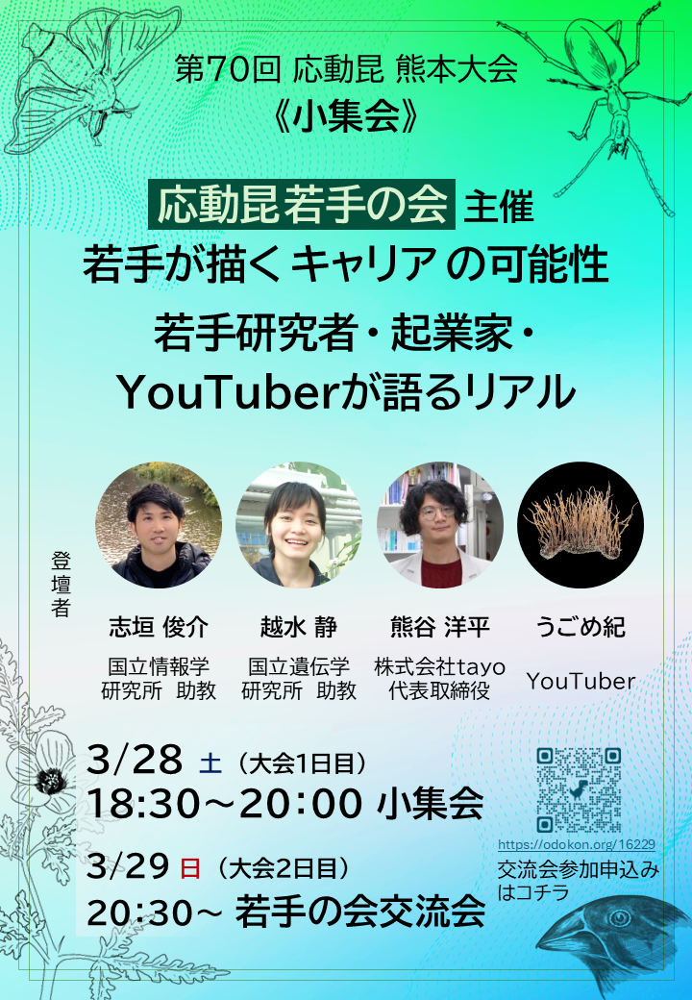
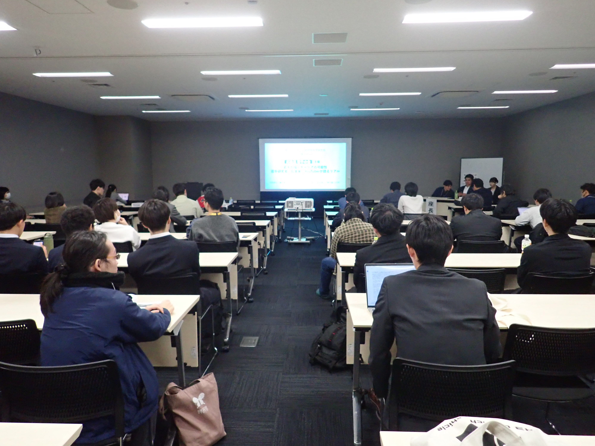
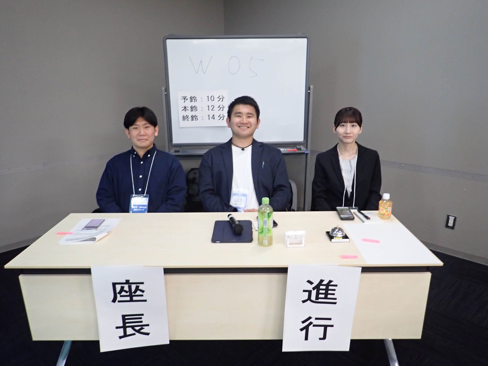

第70回日本応用動物昆虫学会大会にて小集会を開催しました
2026.03.28
第70回日本応用動物昆虫学会大会にて、応動昆若手の会主催の小集会 「若手が描くキャリアの可能性：若手研究者・起業家・YouTuberが語るリアル」 を開催しました。
本小集会では、研究者、起業家、情報発信者として多様なキャリアを歩む講演者をお招きし、 若手世代が今後のキャリアを考えるための実践的な話題提供と議論を行いました。

小集会概要
- タイトル
- 若手が描くキャリアの可能性：若手研究者・起業家・YouTuberが語るリアル
- 開催日時
- 2026年3月28日（土）16:40〜18:10
- 開催場所
-
熊本城ホール
〒860-0805 熊本県熊本市中央区桜町3番40号
- 講演形態
-
15分程度のご講演および質疑応答を行いました。
講演後には、登壇者によるパネルディスカッションも実施しました。 - 講演者
-
志垣 俊介 様（国立情報学研究所）
越水 静 様（国立遺伝学研究所）
熊谷 洋平 様（株式会社tayo）
うごめ紀 様（YouTuber）
当日の様子
当日は多くの学生・若手研究者にご参加いただき、研究キャリア、民間企業での働き方、 起業、研究コミュニケーションなど、多様な観点から活発な意見交換が行われました。


